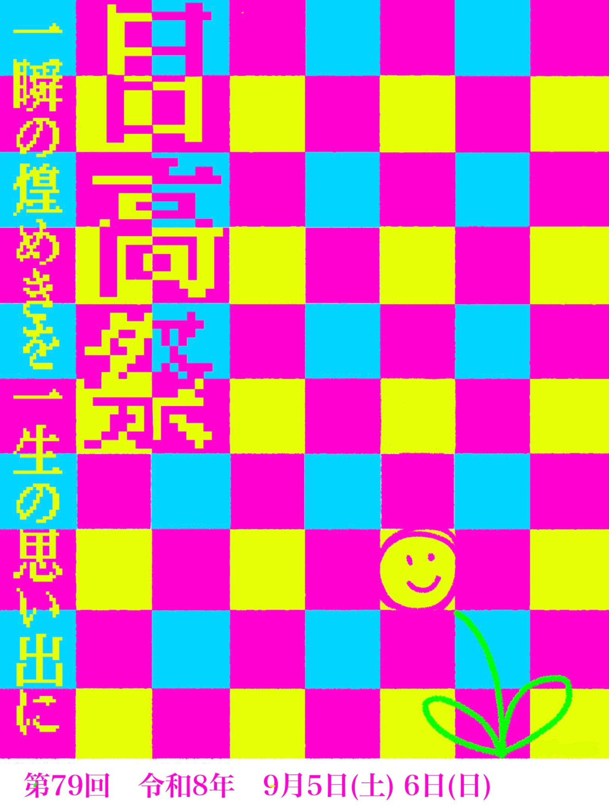

← 目高祭トップへ79th MEKOUSAI / PROGRAM FINDER
OFFICIAL PROGRAM
行きたい企画をすぐ見つける。
第79回目高祭の公式プログラム掲載内容を、Webで探しやすい形に再構成しました。学年・部活動・生徒会・総合探究、さらに演劇・飲食・催しなどから絞り込めます。各団体の説明文と会場・実施時間もまとめて確認できます。

団体
内容
検索
※このページは一般来場者向け企画です。9月5日の昼夜祭は在校生限定のため、一般公開企画とは分けて専用ページに掲載しています。団体名・企画名・会場・時刻は提供された文化祭プログラムとタイムテーブルを基礎にしています。